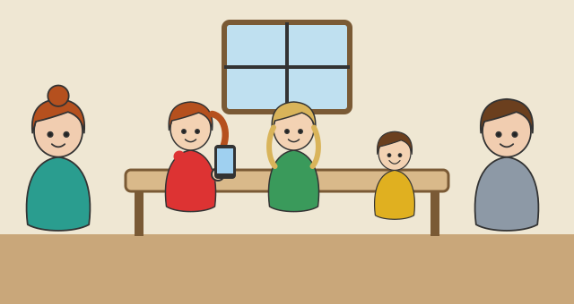
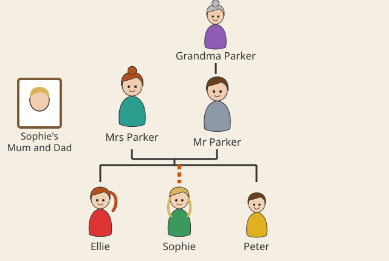

Wer ist wer? Familie, Aussehen und Charakter
Mit einem KI-Tutor lernen
Ein KI-Tutor erklärt dir diese Seite und hilft dir bei den Aufgaben. Wähl deinen Assistenten:
Mit Claude öffnen Mit ChatGPT öffnen Mit Mistral Vibe öffnen
Du nutzt dein eigenes Konto beim Anbieter. Der Assistent ist kein Angebot von lernapps.net: lernapps liefert nur Inhalte und Aufgaben. Die Wahl gilt für alle Seiten, nur auf diesem Gerät.
Wer sitzt am Küchentisch?

Von links: Mrs Parker, Ellie (Pferdeschwanz), Sophie (Zöpfe), Peter (gelbe Jacke), Mr Parker.
Quelle: eigene Zeichnung. Lizenz: CC-BY-4.0.Sophie wohnt jetzt bei den Parkers. Am Abend sitzt die Familie (family) in der Küche, Ellies und Sophies Freund Amir kommt oft zu Besuch. Mr heißt Herr und Mrs heißt Frau. Für ihre Eltern in Deutschland zeichnet Sophie einen Stammbaum: Linien führen von den Eltern zu den Kindern, die Linie nach oben zur Mutter von Mr Parker, die gestrichelte zu Sophie, die zu Gast ist.

Der Stammbaum der Parkers. Die gestrichelte orange Linie führt zu Sophie, die zu Gast ist. Das Foto zeigt ihre Eltern.
Quelle: eigene Zeichnung. Lizenz: CC-BY-4.0.Aufgabe
Lösung
her brother richtige Antwort
Peter hat dieselben Eltern wie Ellie und ist ein Junge.
her sister
Eine sister ist ein Mädchen.
her dad
Ein dad ist ein Vater, kein Kind.
Dieselben Eltern, ein Junge: brother.
Mehr dazu: Lernlandkarte Englisch · Familie und Personenbeschreibung
Das kannst du danach: Du nennst die Menschen in einer Familie auf Englisch und sagst, wie sie aussehen und wie sie sind.
Familienwörter, Aussehen und Charakter
Mum und dad sind deine Mama und dein Papa, sie heißen auch mother und father. Zusammen sind sie deine parents. Dein Bruder ist dein brother, deine Schwester deine sister. Deine Oma ist deine grandma, dein Opa dein grandpa. Deine Tante ist deine aunt, dein Onkel dein uncle, ein Cousin oder eine Cousine dein cousin. Sophies Mama ist Sophie’s mum. Das ’s sagt, zu wem jemand gehört. Über dich sagst du my (mein), zu jemandem your (dein), über einen Jungen oder Mann his (sein), über ein Mädchen oder eine Frau her (ihr).
| Ausdruck | Bedeutung |
|---|---|
| glasses | Brille |
| ponytail | Pferdeschwanz |
| kind | nett / freundlich |
| helpful | hilfsbereit |
| curly | lockig |
| short / long | kurz / lang |
| clever | klug |
Wie sieht jemand aus? Haare, eine Brille oder einen Bart hat man: Mrs Parker has got red hair. Größe und Alter ist man: Mrs Parker is tall. Der Charakter, also wie jemand ist, wird auch mit is gesagt: Mrs Parker is nice.
Steckbrief · Grandma Parker
- Wer? Mr Parker’s mum.
- Aussehen: She has got grey hair. She is small.
- Charakter: She is nice and helpful.
Merke
Haare, Brille, Bart: have got oder has got (he, she, it: has got). Größe und Alter: am, is oder are. Charakter: nur am, is oder are, nie have got. Ein Adjektiv bekommt kein -s. Kurz geht auch: she’s got, she’s tall (das ’s steht dann für has oder is).
Übung
Aufgabe
Lösung
Richtige Antwort: Mrs Parker – Peter’s mum; Mr Parker – Peter’s dad; Ellie – Peter’s sister; Grandma Parker – Peter’s grandma
Ellie hat dieselben Eltern wie Peter und ist ein Mädchen, also seine sister. Peter’s brother gibt es hier nicht, Peter ist selbst der Junge.
Mehr dazu: Lernlandkarte Englisch · Familie und Personenbeschreibung
Aufgabe
Lösung
has got richtige Antwort
Haare hat man. Zu he gehört has got.
have got
Zu he gehört has got, nicht have got.
is
is sagt, wie jemand ist. Haare hat man.
Haare hat man: has got.
Aufgabe
Wer spricht über wen? Schreibe den Satz mit my, your, his oder her.
Tipp
Wer spricht, über wen?
- Ellie sagt über sich selbst. Mein Bruder ist Peter.
- Sophie sagt zu Ellie. Dein Bruder ist nett.
- Sophie sagt über Ellie. Ihre Mama ist freundlich.
- Sophie sagt über Mr Parker. Seine Haare sind kurz.
Lösung
- My brother is Peter. (auch richtig: My brother's Peter.)
- Your brother is nice. (auch richtig: Your brother is kind.; Your brother is friendly.; Your brother's nice.; Your brother's kind.; Your brother's friendly.)
- Her mum is friendly. (auch richtig: Her mum is kind.; Her mum is nice.; Her mum's friendly.; Her mum's kind.; Her mum's nice.; Her mother is friendly.; Her mother is kind.; Her mother is nice.; Her mother's friendly.; Her mother's kind.; Her mother's nice.)
- His hair is short. (auch richtig: His hair's short.)
Aufgabe
Schreibe den ganzen Satz. be steht für am, is oder are.
Tipp
Hat man es, ist man es?
- Ellie · have got · a ponytail
- Amir · have got · glasses
- Peter · be · young
- Grandma Parker · be · kind
Lösung
- Ellie has got a ponytail. (auch richtig: Ellie has a ponytail.; Ellie's got a ponytail.)
- Amir has got glasses. (auch richtig: Amir has glasses.; Amir's got glasses.)
- Peter is young. (auch richtig: Peter's young.)
- Grandma Parker is kind. (auch richtig: Grandma Parker's kind.)
Aufgabe
Schreibe den Satz auf Englisch.
Tipp
Beginne mit my oder dem Namen.
- Herr Parker ist Peters Papa.
- Frau Parker ist Ellies Mama.
- Meine Tante hat lockige Haare.
Lösung
- Mr Parker is Peter's dad. (auch richtig: Mr Parker is Peter's father.)
- Mrs Parker is Ellie's mum. (auch richtig: Mrs Parker is Ellie's mother.)
- My aunt has got curly hair. (auch richtig: My aunt has curly hair.; My aunt's got curly hair.)
Aufgabe
Hör zu und schreibe, was du hörst.
- KI
- KI
- KI
Lösung
- Peter's grandma is old and funny. (auch richtig: Peter's grandma's old and funny.)
- My mum is kind and clever. (auch richtig: My mum's kind and clever.)
- Sophie's mum is tall and happy. (auch richtig: Sophie's mum's tall and happy.)
Selbst sagen und schreiben
Aufgabe
Hör zu, sprich nach und nimm dich auf. Vergleiche dann mit dem Original.
Tipp
Hör den Satz zuerst. Sprich dann langsam nach.
- The Parkers are a friendly family.KI
- Peter has got a clever sister.KI
- My parents are friendly people.KI
Zum Aufnehmen braucht diese Aufgabe JavaScript. Die Beispiele kannst du auch ohne anhören.
Lösung
- The Parkers are a friendly family.
- Peter has got a clever sister.
- My parents are friendly people.
Dein Profil „All about me“ (Alles über mich) wächst mit jeder Seite. Ellie hat ihre erste Zeile schon geschrieben. Schau, wie sie es macht.
| Was | Englisch |
|---|---|
| Wer wohnt bei mir? | I live with my mum, my dad and my brother. |
| Mein Bruder | My brother is Peter. He is nine. |
| Wie sieht er aus? | He has got short brown hair. |
| Wie ist er? | He is friendly. |
Offene Aufgabe
Schreibe den ersten Teil deines Profils „All about me“ in dein Heft. Wähle einen Menschen, der zu deiner Familie gehört oder dir wichtig ist, und schreibe zwei bis vier Sätze: Wer ist das für dich, wie sieht die Person aus und wie ist sie? Die App bewertet deinen Text nicht: Vergleiche ihn danach selbst mit den Punkten.
Eine gute Antwort enthält:
Lösung
My grandma is Anna. She has got grey hair. She is kind and funny.
Oder: My friend is Tom. He has got curly hair and glasses. He is quiet and clever.
Wie es weitergeht
Sophie schickt den Stammbaum nach Hause. Ihre Eltern wollen mehr wissen: Wie ist ihr Englischlehrer Mr Hill? Und wie ist ihr Zimmer? Auf der nächsten Seite schreibt Sophie darüber einen Text, in dem ein Satz zum nächsten passt.